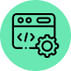

Desenvolvedor fullstack

Oi! Eu sou o Marcos, é um prazer ter você aqui
Desde que comecei meus estudos a 3 anos, me dedico a aprender e a aprimorar minhas habilidades, meu foco de estudos é principalmente backend, mas tenho usado dos meus talentos criativos para criar interfaces intuitivas e de fácil uso, sou confiante, naturalmente curioso e trabalho continuamente para melhorar minhas habilidades.

Back-end
Gosto de criar os bastidores da aplicação. Desde a coleta dos requisitos até a implementação do sistema.
Tecnologias
NodeJs, Java - SpringBoot
Front-end
Apesar de não ser minha maior especialidade, poder dar vida a uma nova aplicação, e ser responsável pela experiência do usuário me deixa muito animado
Tecnologias
HTML, CSS, JavaScript
Designer
Eu valorizo uma estrutura de conteúdo simples, padrões de design limpos e interações bem pensadas.
Ferramentas
Figma